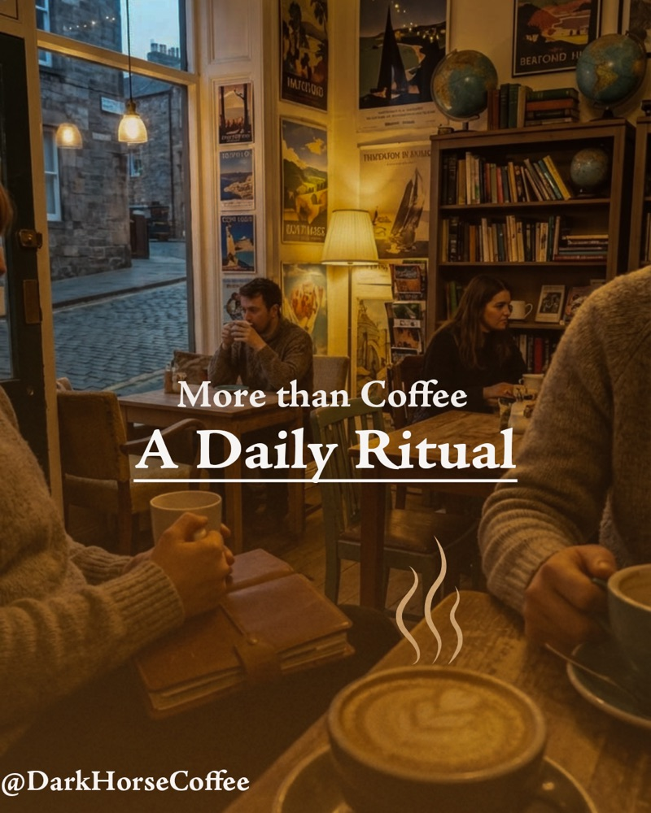

01Where I started
Before the degree I completed a Certificate in Creative Media (Level 4) at Yoobee. It gave me the design tools: InDesign, Photoshop, Illustrator, Premiere Pro, DaVinci Resolve and Fusion 360. I could make things look good, but I didn’t yet know how marketing worked or how to measure whether it did.
I started the Bachelor of Digital Innovation in 2024 to bring marketing, business and technology together. Over three years, the technical side of marketing became my focus: websites, tracking, CRM and automation.
02Timeline
03Year 1, 2024: Foundations
Year 1 covered the basics of each discipline the degree joins together: design, marketing, the web, entrepreneurship and campaigns. I finished with A averages in both Design Foundation and Marketing Foundation.
| Paper | Key work | Result |
|---|---|---|
| Design Foundation | Marketing collateral | A |
| Marketing Foundation | Marketing plan: framework, consumer decision making, digital plan and messaging, launch and report | A |
| Web & Graphic Design | Promotional assets for a brand; website design | B+ |
| Entrepreneurship | Case study, reflective analysis, pitch presentation (A) | A- |
| Campaigns | Copywriting; campaign plan for strategy and creativity (A); presentation | A- |
What it gave me
- A structured way to plan marketing, from framework to launch to report, which I still use
- My first website design project, the same year I started building sites for real clients at Pulsr
- Pitching and presenting: my entrepreneurship pitch got an A
04Year 2, 2025: Specialising
Year 2 was my strongest year for grades. It moved from basics into specialist areas, and it’s where I found the technical marketing I now do every day: SEO, CRM and digital advertising.
| Paper | Key work | Result |
|---|---|---|
| BDI201 Product Launch | Sustainable packaging, semiotic analysis and collateral, product launch: A+ on all three | A+ |
| BDI210 Inbound Marketing | Case study, presentation (A+), inbound strategy | A |
| BDI221B Creative Strategies | Major client brief project (group), reflection | A |
| BDI200 Branding | Logo design (A), collateral material (A), presentation | A- |
| BDI220 SEO & CRM | SEO media content creation; CRM analysis and engagement strategies | A- |
| BDI211B Digital Advertising | Case study (A+), group campaign client brief | A- |
| BDI202 Project & Stakeholder Management | Project proposal (A+), project plan, case study | B+ |
| BDI212 Integrated Marketing Communications | Campaigns analysis, campaign brief, reflection | C+ |
Highs and lows
- High: six A+ results, including a clean sweep in Product Launch
- High: SEO & CRM, which led directly to the HubSpot and tracking work I do at Delta Strike
- Low: Integrated Marketing Communications (C+) and the later parts of Project & Stakeholder Management. These were longer, more analytical briefs, and they came in the same year I was working at Venning Property.
05Year 3, 2026: Industry practice
In Year 3 the degree and my job came together. I started at Delta Strike in February, and the coursework let me bring real industry problems into class.
| Paper | Key work | Result |
|---|---|---|
| BDI322 Innovation Models | Atriple, a server-side conversion tracking product: case study and wiki (A+), then a second round of testing and a pivot | A+ 322.1 |
| BDI311 Collaborative Studio | Dark Horse Coffee: strategic portfolio, creative portfolio (A-), presentation (A-) | B+ |
| BDI310 Growth Hacking | Case study analysis, group client brief (B+) | B |
| BDI320 Purpose-Driven Leadership | Group transformation plan, individual reflection (B) | C+ |
| BDI323 Industry Practice Studio | IAAPA Orlando 2026 campaign plan for Delta Strike; this portfolio | In progress |
The work I’m proudest of



“Great work on the strategic document… the way you have used canvases to generate real insights is wonderful… Much better from you this time Lawson, well done.”Tutor feedback, BDI322.1 Case Study (A+)
06Work alongside study
I worked the whole way through the degree. Each job built a different skill, and the degree gave me the frameworks to use them better.
| When | Role | What it taught me |
|---|---|---|
| Jan 2024 – now | Founder, Pulsr Digital | Building and launching websites for 7 local businesses; working directly with clients |
| Mar – Jul 2024 | Merchandiser, Coca-Cola | Reliability: 5am starts across multiple supermarkets |
| Aug – Nov 2024 | Front of House, Holy Moly | Customer service on the floor, at reception and behind the bar |
| Dec 2024 – Dec 2025 | Business Support Co-ordinator, Venning Property | Running all IT and marketing for a start-up; a $7k seminar campaign; internal tools in React and Python |
| Feb 2026 – now | Marketing Specialist, Delta Strike International | Global website rebuild (+60% traffic), HubSpot CRM, Google Ads (4 conversions a day), IAAPA Orlando |
07How my skills grew
| Skill | Year 1 | Year 2 | Year 3 and work |
|---|---|---|---|
| Design | Collateral, promotional assets | Logo design, packaging, semiotics (A+) | IAAPA ads and brochures, Dark Horse campaign |
| Web | First website design | SEO content creation | Next.js global site in 12 languages; React prototype |
| Marketing strategy | Marketing plan framework | Inbound strategy, digital advertising | Full trade show campaign with targeted audiences |
| Data & tracking | Launch reporting | CRM analysis | GA4, Google Ads conversion tracking, Atriple |
| Research & innovation | Entrepreneurship case study | Project proposal (A+) | Two-round lean testing and a pivot (Atriple) |
08What I learned
- I’m strongest when the work is hands-on. My best results (Product Launch, Atriple, Dark Horse creative) were projects where I could build or design something real.
- Big analytical briefs need the same planning as campaigns. My lowest marks came in long report-based papers, often during busy work periods. I now plan them earlier.
- Real work makes coursework better, and the reverse is true too. Atriple came from a tracking problem I see at work, and the IAAPA campaign became my BDI323 project.
- Test before you commit. Atriple taught me to set decision rules before the results come in, and to accept when the evidence says pivot.
09What’s next
I’m continuing as Marketing Specialist at Delta Strike International, growing its global marketing systems. Alongside that, I’ll keep running Pulsr Digital and develop the managed tracking service that came out of Atriple.
Longer term, I want to keep building a career as a Marketing Technologist: someone who can plan the campaign and build the technology behind it.